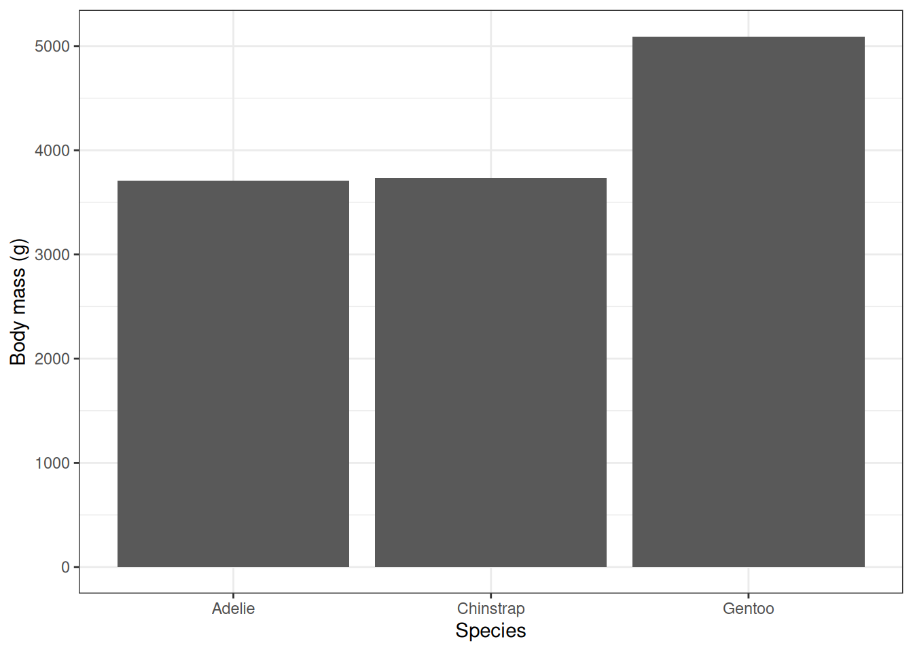
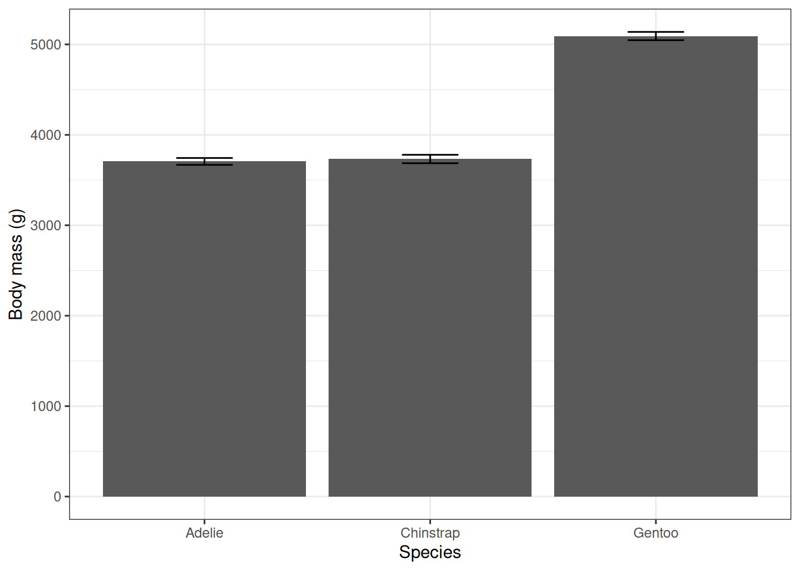
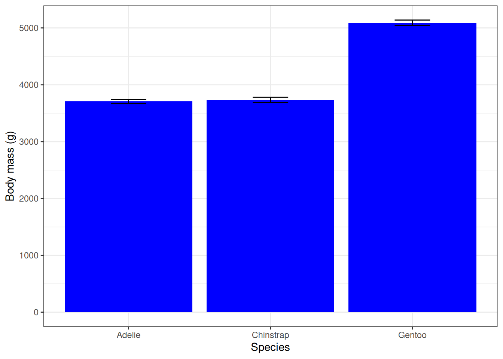

10 Bar plot with error bars
The final coding task for today (before you tidy up) will be to create a column plot of the body mass means with the standard errors plotted as error bars.
For simplicity, we will only use the data summarised by species(pengdata_species_summary), not by species and sex.
To make a column chart, you will use the geom_col() function to add the data layer.
To start, type and run the code below to make a basic column plot using the data summarised only by species.
ggplot(data = pengdata_species_summary,
aes(x = species, y = mass_mean)) +
geom_col() +
labs(x = "Species", y = "Body mass (g)") +
theme_bw()
10.1 Adding error bars
To add error bars, you will use the function geom_errorbar().
However, the error bars use different data than the columns themselves - the standard error and not the means.
Therefore, we’ll have to provide the new data with a new aes() function.
Spend a couple minutes thinking about what the data will be.
Qs:
What numerical values do you want to be the tops and bottoms of your error bars? (Hint: it is not the SE values themselves)
How might you tell R how to calculate them?
The values for the error bars are not the raw SE calculations - they are the SE values off-set from the mean.
This means we will have to tell R to do some math:
- The top of the error bars (
ymax) will be the mean + SE - The bottom of the error bars (
ymin) will be the mean - SE
Add the following layer to your code - after the geom_col() - to add error bars to your figure.
The width argument is making the width of the error bars smaller - otherwise they will be the same width as the columns.
geom_errorbar(aes(ymax = mass_mean + mass_SE, ymin = mass_mean - mass_SE, width = 0.25)) +

Try changing the colour by the adding the argument fill = "blue" to the geom_col() function.

Yikes, that’s a bit bright.
Choose a colour that you like better either using named colours or hexadecimal codes (e.g. use fill = "#66CCEE")
10.2 Tidying up
For your tasks today, tidy up and save your R script, like last time.
Remember to:
- Make sure that your code is sufficiently commented, so that someone else (or you during the end of module test!) can understand what you did.
- Delete any spare lines of code that you don’t need anymore (e.g. for testing something that didn’t work right away).